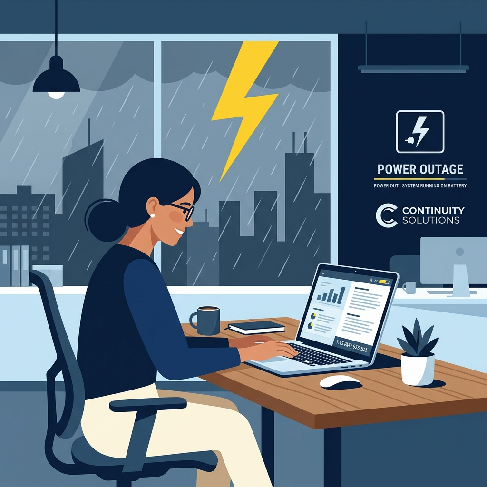
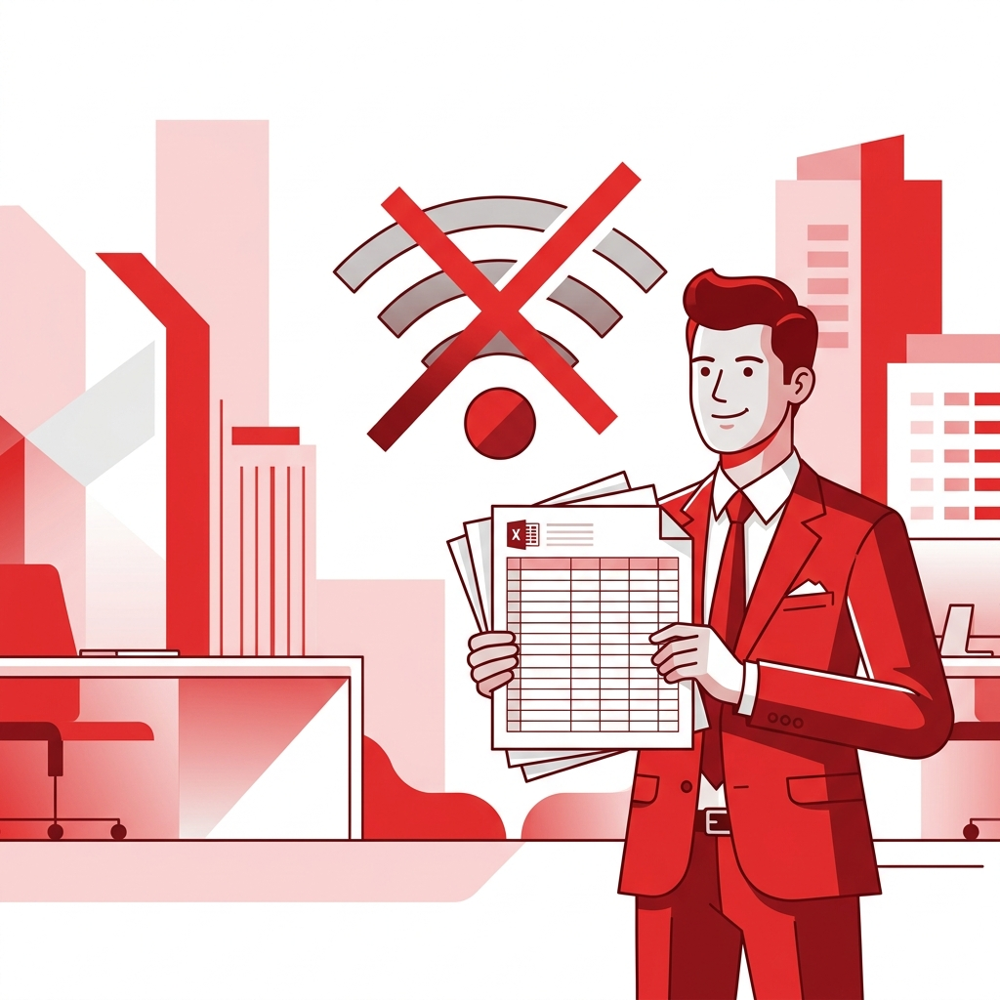
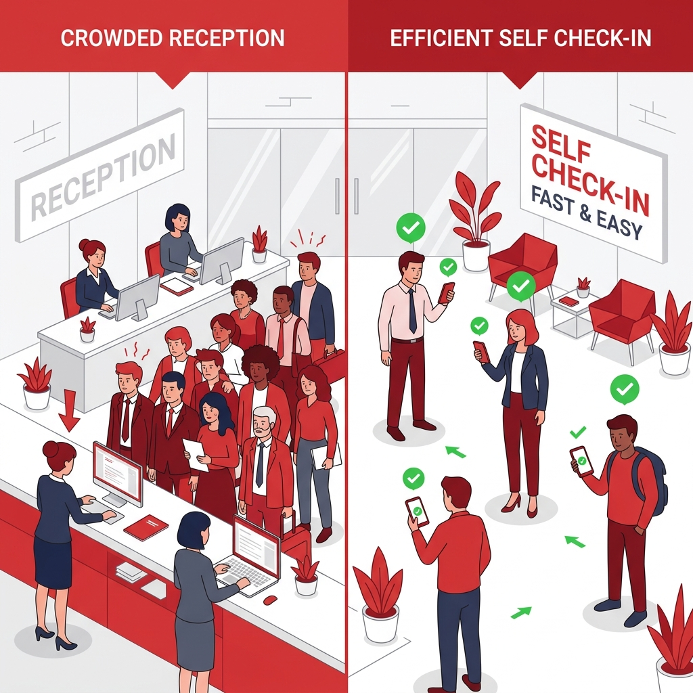
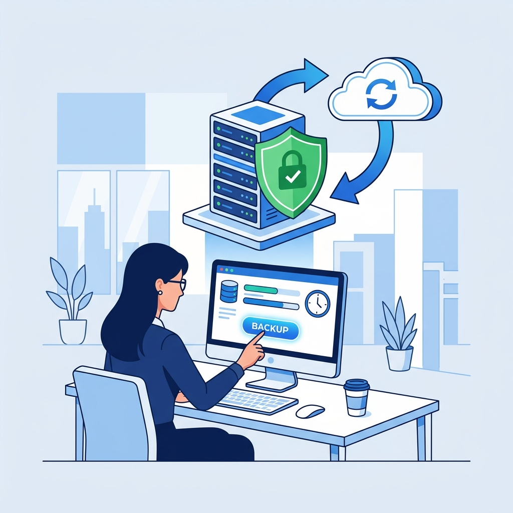

No hay interrupción en las operaciones. El sistema PC Hotelería funciona desde notebooks con batería, los cuales se activan inmediatamente. Toda la información está en la nube y se puede acceder sin depender de la red eléctrica local.
- Se activan los notebooks de respaldo del equipo de Recepción
- Los notebooks operan entre 4 a 8 horas con batería completa
- Los datos de la plataforma siguen disponibles (están en la nube)
- Los trabajadores pueden continuar usando el portal desde sus teléfonos
- Se activarán linternas y luz de emergencia en Recepción

Se activa inmediatamente el Plan B con los Excel de respaldo. Gracias al procedimiento de la Parte 1, todas las empresas ya enviaron su nómina de trabajadores en formato Excel — tanto al portal como al correo oficial. Estos archivos son el respaldo físico que permite operar sin internet.
- Se utilizan los Excel enviados previamente por cada empresa
- Se accede a los correos recibidos en hoteleriapc@aramark.cl (descargados)
- El registro de check-in se realiza manualmente en el Excel local
- Al recuperar el internet, se actualiza la plataforma con los registros manuales
- Se informa a los supervisores de empresa que deben guiar a sus trabajadores

Se activa el modo "Check-In Libre". El sistema PC Hotelería permite liberar temporalmente el check-in digital para que los trabajadores puedan confirmar su llegada directamente desde su teléfono, sin necesitar la autorización previa de Recepción. Esto descongestion el área inmediatamente.
- Recepción activa el "Modo Check-In Libre" en el sistema
- Se informa a los supervisores de empresa que sus trabajadores pueden confirmar solos
- Los trabajadores acceden al portal y confirman su llegada desde el teléfono
- El sistema muestra automáticamente el número de habitación asignado
- Solo quedan en fila quienes tienen problemas específicos o no están en el sistema
- Recepción monitorea en tiempo real el avance del check-in

El sistema realiza un respaldo automático completo cada día. Todos los datos operacionales — asignaciones, check-ins, check-outs, registros de empresa — se guardan en una copia de seguridad diaria. En caso de falla, se restaura desde el último respaldo sin pérdida significativa de información.
- Todos los días se genera automáticamente un respaldo completo del sistema
- El respaldo se guarda en la nube (Supabase) con redundancia geográfica
- Los datos incluyen: asignaciones, empresas, check-ins, check-outs y censo
- La restauración desde respaldo toma menos de 30 minutos
- Los Excel de las empresas sirven como segundo respaldo independiente
- El equipo técnico es notificado automáticamente ante cualquier anomalía

🛡️ Resumen del Plan de Contingencia
4 protocolos activos que garantizan continuidad operacional en todo momento